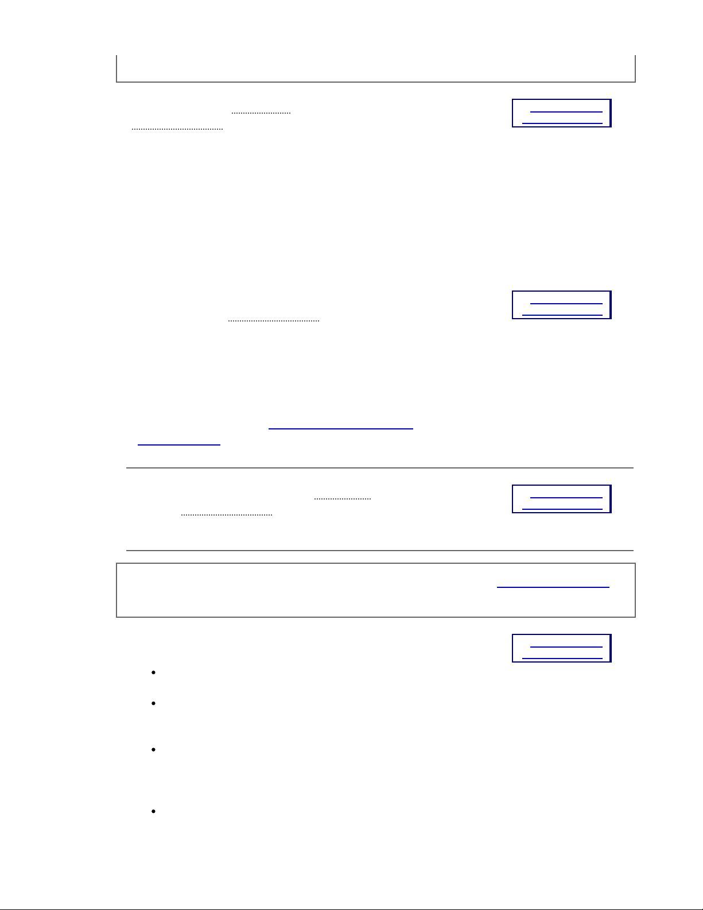
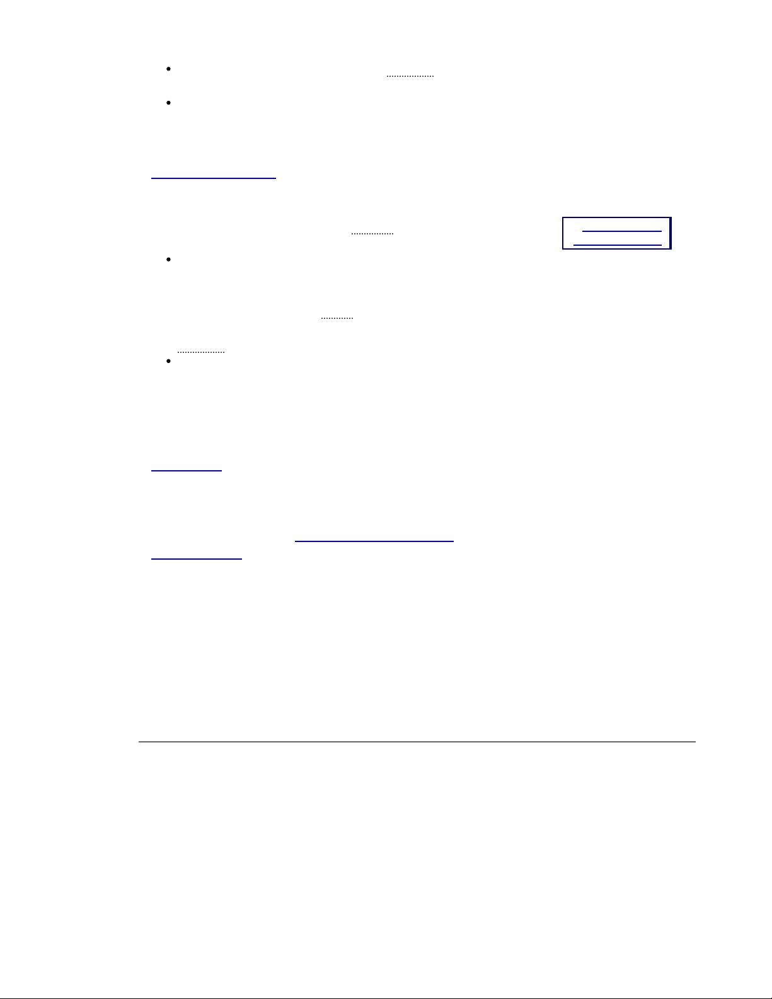
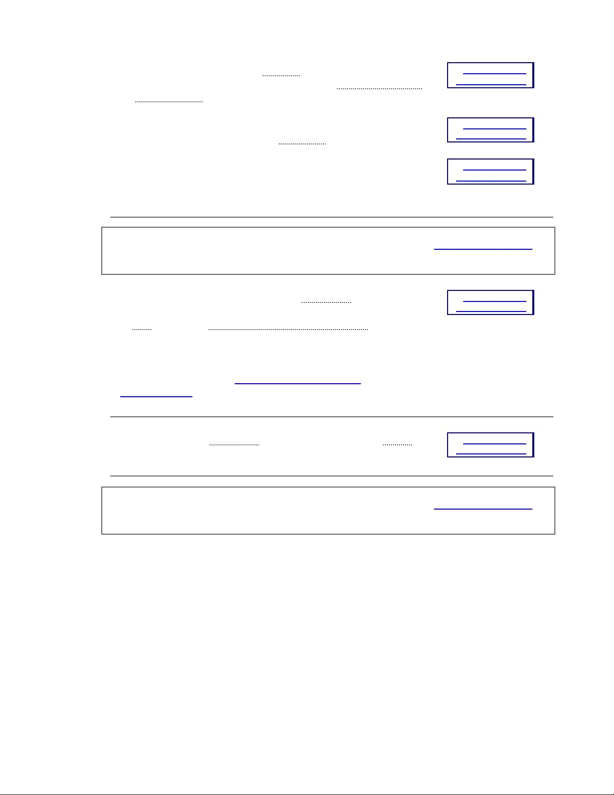
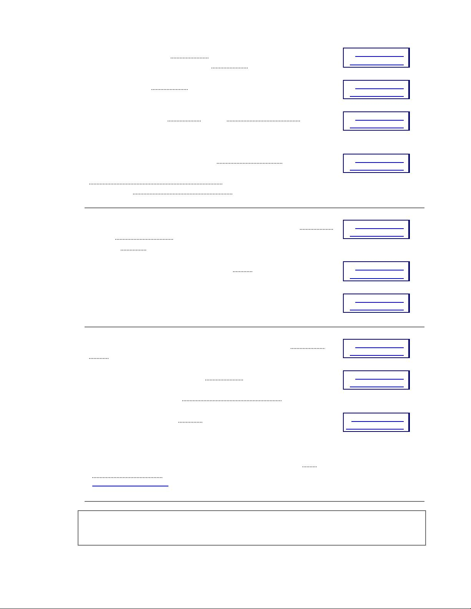
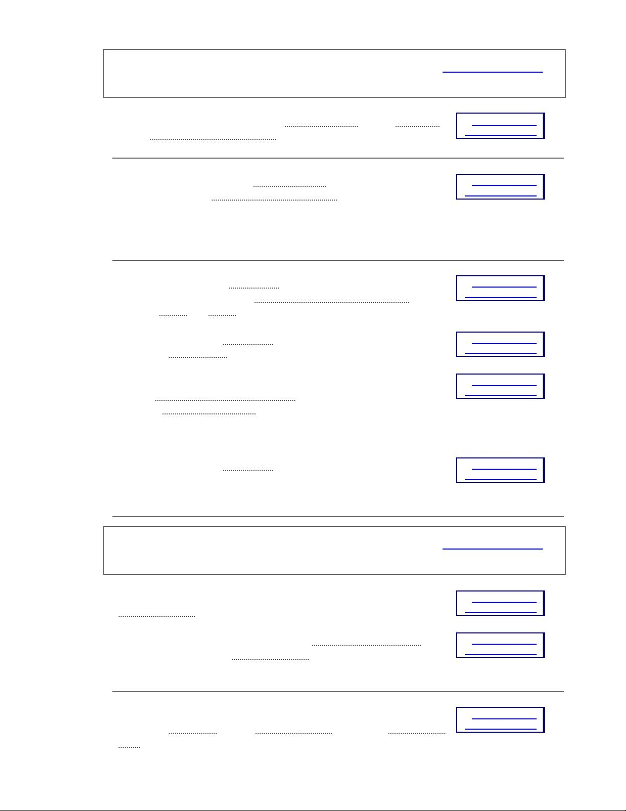
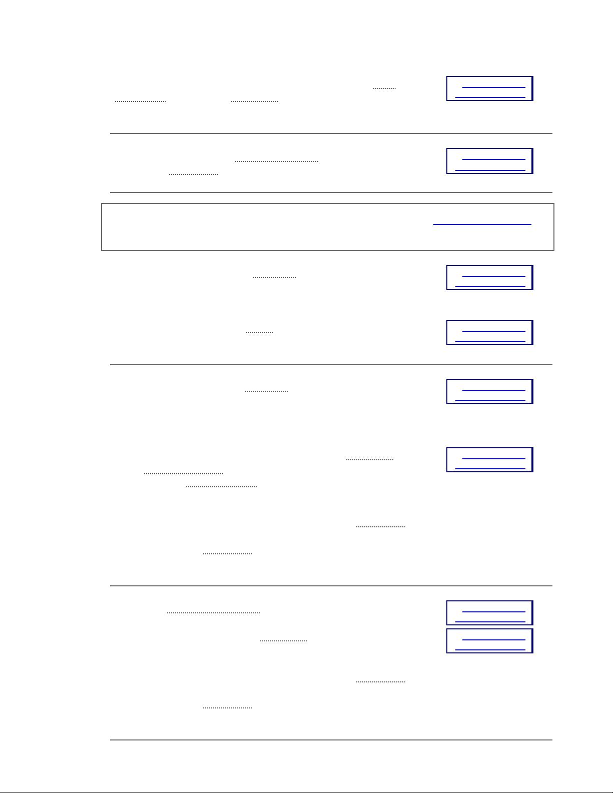
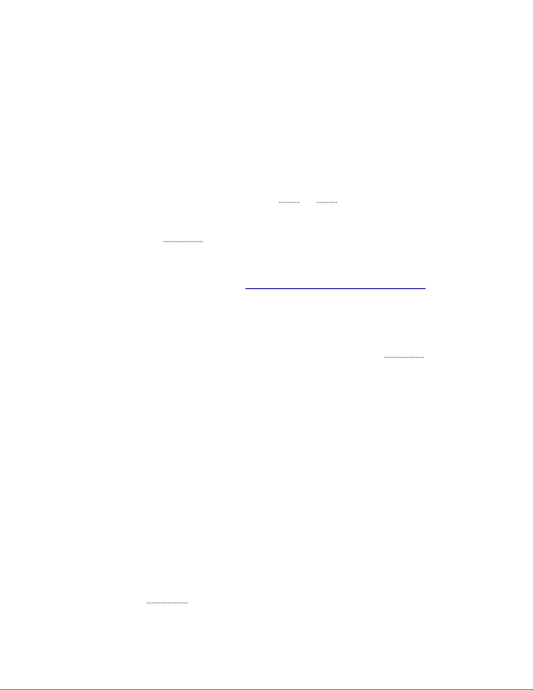
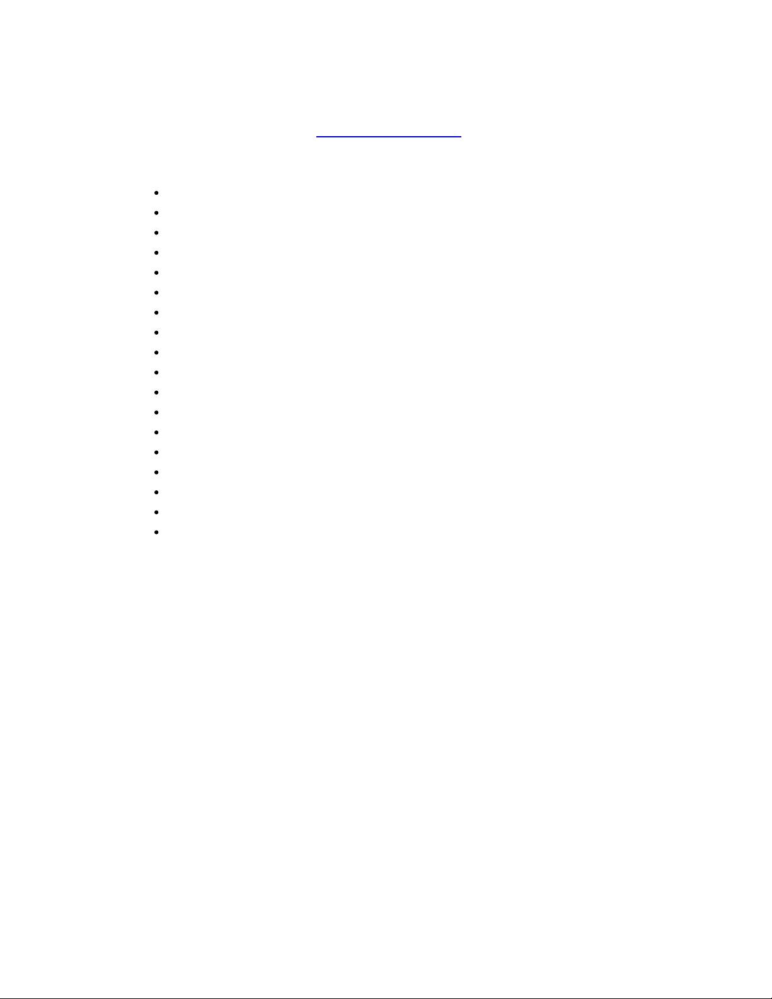
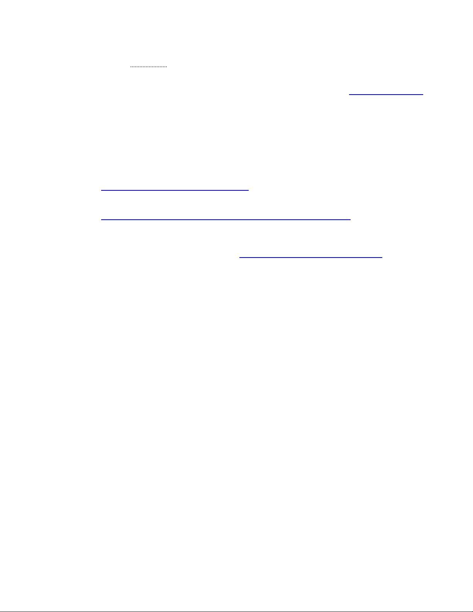

[
contents
]
Web Content Accessibility Guidelines (WCAG) 2.0
W3C Recommendation 11 December 2008
This version:
http://www.w3.org/TR/2008/REC-WCAG20-20081211/
Latest version:
http://www.w3.org/TR/WCAG20/
Previous version:
http://www.w3.org/TR/2008/PR-WCAG20-20081103/
Editors:
Ben Caldwell, Trace R&D Center, University of Wisconsin-Madison
Michael Cooper, W3C
Loretta Guarino Reid, Google, Inc.
Gregg Vanderheiden, Trace R&D Center, University of Wisconsin-Madison
Previous Editors:
Wendy Chisholm (until July 2006 while at W3C)
John Slatin (until June 2006 while at Accessibility Institute, University of Texas at Austin)
Jason White (until June 2005 while at University of Melbourne)
Please refer to the
errata
for this document, which may include normative corrections.
See also
translations
.
This document is also available in non-normative formats, available from
Alternate Versions of Web
Content Accessibility Guidelines 2.0
.
Copyright
© 2008
W3C
®
(
MIT
,
ERCIM
,
Keio
), All Rights Reserved. W3C
liability
,
trademark
and
document use
rules apply.
Abstract
Web Content Accessibility Guidelines (WCAG) 2.0 covers a wide range of recommendations for making
Web content more accessible. Following these guidelines will make content accessible to a wider range
of people with disabilities, including blindness and low vision, deafness and hearing loss, learning
disabilities, cognitive limitations, limited movement, speech disabilities, photosensitivity and combinations
of these. Following these guidelines will also often make your Web content more usable to users in
general.
WCAG 2.0 success criteria are written as testable statements that are not technology-specific. Guidance
about satisfying the success criteria in specific technologies, as well as general information about
interpreting the success criteria, is provided in separate documents.
See
Web Content Accessibility
Guidelines (WCAG) Overview
for an introduction and links to WCAG technical and educational material.
WCAG 2.0 succeeds
Web Content Accessibility Guidelines 1.0
[WCAG10]
, which was published as a
Web Content Accessibility Guidelines (WCAG) 2.0 https://www.w3.org/TR/WCAG20/
1 of 34 7/18/18, 2:32 PM

W3C Recommendation May 1999. Although it is possible to conform either to WCAG 1.0 or to WCAG 2.0
(or both), the W3C recommends that new and updated content use WCAG 2.0. The W3C also
recommends that Web accessibility policies reference WCAG 2.0.
Status of this Document
This section describes the status of this document at the time of its publication. Other documents may
supersede this document. A list of current W3C publications and the latest revision of this technical report
can be found in the
W3C technical reports index
at
http://www.w3.org/TR/
.
This is the Web Content Accessibility Guidelines (WCAG) 2.0
W3C Recommendation
from the
Web
Content Accessibility Guidelines Working Group
.
This document has been reviewed by W3C Members, by software developers, and by other W3C groups
and interested parties, and is endorsed by the Director as a W3C Recommendation. It is a stable
document and may be used as reference material or cited from another document. W3C's role in making
the Recommendation is to draw attention to the specification and to promote its widespread deployment.
This enhances the functionality and interoperability of the Web.
WCAG 2.0 is supported by the associated non-normative documents,
Understanding WCAG 2.0
and
Techniques for WCAG 2.0
. Although those documents do not have the formal status that WCAG 2.0 itself
has, they provide information important to understanding and implementing WCAG.
The Working Group requests that any comments be made using the provided
online comment form
. If this
is not possible, comments can also be sent to
public-comments-wcag20@w3.org
. The
archives for the
public comments list
are publicly available. Comments received on the WCAG 2.0 Recommendation
cannot result in changes to this version of the guidelines, but may be addressed in errata or future
versions of WCAG. The Working Group does not plan to make formal responses to comments. Archives
of the
WCAG WG mailing list discussions
are publicly available, and future work undertaken by the
Working Group may address comments received on this document.
This document has been produced as part of the W3C
Web Accessibility Initiative
(WAI). The goals of the
WCAG Working Group are discussed in the
WCAG Working Group charter
. The WCAG Working Group is
part of the
WAI Technical Activity
.
This document was produced by a group operating under the
5 February 2004 W3C Patent Policy
. W3C
maintains a
public list of any patent disclosures
made in connection with the deliverables of the group;
that page also includes instructions for disclosing a patent. An individual who has actual knowledge of a
patent which the individual believes contains
Essential Claim(s)
must disclose the information in
accordance with
section 6 of the W3C Patent Policy
.
Table of Contents
Introduction
WCAG 2.0 Layers of Guidance
WCAG 2.0 Supporting Documents
Important Terms in WCAG 2.0
WCAG 2.0 Guidelines
1 Perceivable
1.1
Provide text alternatives for any non-text content so that it can be changed into
other forms people need, such as large print, braille, speech, symbols or simpler
language.
1.2
Provide alternatives for time-based media.
1.3
Create content that can be presented in different ways (for example simpler
Web Content Accessibility Guidelines (WCAG) 2.0 https://www.w3.org/TR/WCAG20/
2 of 34 7/18/18, 2:32 PM

layout) without losing information or structure.
1.4
Make it easier for users to see and hear content including separating foreground
from background.
2 Operable
2.1
Make all functionality available from a keyboard.
2.2
Provide users enough time to read and use content.
2.3
Do not design content in a way that is known to cause seizures.
2.4
Provide ways to help users navigate, find content, and determine where they are.
3 Understandable
3.1
Make text content readable and understandable.
3.2
Make Web pages appear and operate in predictable ways.
3.3
Help users avoid and correct mistakes.
4 Robust
4.1
Maximize compatibility with current and future user agents, including assistive
technologies.
Conformance
Conformance Requirements
Conformance Claims (Optional)
Statement of Partial Conformance - Third Party Content
Statement of Partial Conformance - Language
Appendices
Appendix A:
Glossary
(Normative)
Appendix B:
Acknowledgments
Appendix C:
References
Introduction
This section is
informative
.
Web Content Accessibility Guidelines (WCAG) 2.0 defines how to make Web content more accessible to
people with disabilities. Accessibility involves a wide range of disabilities, including visual, auditory,
physical, speech, cognitive, language, learning, and neurological disabilities. Although these guidelines
cover a wide range of issues, they are not able to address the needs of people with all types, degrees,
and combinations of disability. These guidelines also make Web content more usable by older individuals
with changing abilities due to aging and often improve usability for users in general.
WCAG 2.0 is developed through the
W3C process
in cooperation with individuals and organizations
around the world, with a goal of providing a shared standard for Web content accessibility that meets the
needs of individuals, organizations, and governments internationally. WCAG 2.0 builds on WCAG 1.0
[WCAG10]
and is designed to apply broadly to different Web technologies now and in the future, and to
be testable with a combination of automated testing and human evaluation. For an introduction to WCAG,
see the
Web Content Accessibility Guidelines (WCAG) Overview
.
Web accessibility depends not only on accessible content but also on accessible Web browsers and other
user agents. Authoring tools also have an important role in Web accessibility. For an overview of how
these components of Web development and interaction work together, see:
Essential Components of Web Accessibility
User Agent Accessibility Guidelines (UAAG) Overview
Authoring Tool Accessibility Guidelines (ATAG) Overview
WCAG 2.0 Layers of Guidance
Web Content Accessibility Guidelines (WCAG) 2.0 https://www.w3.org/TR/WCAG20/
3 of 34 7/18/18, 2:32 PM

The individuals and organizations that use WCAG vary widely and include Web designers and
developers, policy makers, purchasing agents, teachers, and students. In order to meet the varying needs
of this audience, several layers of guidance are provided including overall
principles
, general
guidelines
,
testable
success criteria
and a rich collection of
sufficient techniques, advisory techniques
, and
documented common failures
with examples, resource links and code.
Principles
- At the top are four principles that provide the foundation for Web accessibility:
perceivable, operable, understandable, and robust
. See also
Understanding the Four Principles of
Accessibility
.
Guidelines
- Under the principles are guidelines. The 12 guidelines provide the basic goals that
authors should work toward in order to make content more accessible to users with different
disabilities. The guidelines are not testable, but provide the framework and overall objectives to
help authors understand the success criteria and better implement the techniques.
Success Criteria
- For each guideline, testable success criteria are provided to allow WCAG 2.0
to be used where requirements and conformance testing are necessary such as in design
specification, purchasing, regulation, and contractual agreements. In order to meet the needs of
different groups and different situations, three levels of conformance are defined: A (lowest), AA,
and AAA (highest). Additional information on WCAG levels can be found in
Understanding Levels
of Conformance
.
Sufficient and Advisory Techniques
- For each of the
guidelines
and
success criteria
in the
WCAG 2.0 document itself, the working group has also documented a wide variety of
techniques
.
The techniques are informative and fall into two categories: those that are
sufficient
for meeting the
success criteria and those that are
advisory
. The advisory techniques go beyond what is required
by the individual success criteria and allow authors to better address the guidelines. Some
advisory techniques address accessibility barriers that are not covered by the testable success
criteria. Where common failures are known, these are also documented. See also
Sufficient and
Advisory Techniques in Understanding WCAG 2.0
.
All of these layers of guidance (principles, guidelines, success criteria, and sufficient and advisory
techniques) work together to provide guidance on how to make content more accessible. Authors are
encouraged to view and apply all layers that they are able to, including the advisory techniques, in order
to best address the needs of the widest possible range of users.
Note that even content that conforms at the highest level (AAA) will not be accessible to individuals with
all types, degrees, or combinations of disability, particularly in the cognitive language and learning areas.
Authors are encouraged to consider the full range of techniques, including the advisory techniques, as
well as to seek relevant advice about current best practice to ensure that Web content is accessible, as
far as possible, to this community.
Metadata
may assist users in finding content most suitable for their
needs.
WCAG 2.0 Supporting Documents
The WCAG 2.0 document is designed to meet the needs of those who need a stable, referenceable
technical standard. Other documents, called supporting documents, are based on the WCAG 2.0
document and address other important purposes, including the ability to be updated to describe how
WCAG would be applied with new technologies. Supporting documents include:
How to Meet WCAG 2.0
- A customizable quick reference to WCAG 2.0 that includes all of the
guidelines, success criteria, and techniques for authors to use as they are developing and
evaluating Web content.
1.
Understanding WCAG 2.0
- A guide to understanding and implementing WCAG 2.0. There is a
short "Understanding" document for each guideline and success criterion in WCAG 2.0 as well as
2.
Web Content Accessibility Guidelines (WCAG) 2.0 https://www.w3.org/TR/WCAG20/
4 of 34 7/18/18, 2:32 PM

key topics.
Techniques for WCAG 2.0
- A collection of techniques and common failures, each in a separate
document that includes a description, examples, code and tests.
3.
The WCAG 2.0 Documents
- A diagram and description of how the technical documents are
related and linked.
4.
See
Web Content Accessibility Guidelines (WCAG) Overview
for a description of the WCAG 2.0
supporting material, including education resources related to WCAG 2.0.
Additional resources covering
topics such as the business case for Web accessibility, planning implementation to improve the
accessibility of Web sites, and accessibility policies are listed in
WAI Resources
.
Important Terms in WCAG 2.0
WCAG 2.0 includes three important terms that are different from WCAG 1.0. Each of these is introduced
briefly below and defined more fully in the glossary.
Web Page
It is important to note that, in this standard, the term "
Web page
" includes much more than static
HTML pages. It also includes the increasingly dynamic Web pages that are emerging on the
Web, including "pages" that can present entire virtual interactive communities. For example, the
term "Web page" includes an immersive, interactive movie-like experience found at a single URI.
For more information, see
Understanding "Web Page"
.
Programmatically Determined
Several success criteria require that content (or certain aspects of content) can be
"
programmatically determined
." This means that the content is delivered in such a way that
user
agents
, including
assistive technologies
, can extract and present this information to users in
different modalities. For more information, see
Understanding Programmatically Determined
.
Accessibility Supported
Using a technology in a way that is accessibility supported means that it works with assistive
technologies (AT) and the accessibility features of operating systems, browsers, and other user
agents. Technology features can only be
relied upon
to conform to WCAG 2.0 success criteria if
they are used in a way that is "
accessibility supported
". Technology features can be used in
ways that are not accessibility supported (do not work with assistive technologies, etc.) as long
as they are not relied upon to conform to any success criterion (i.e., the same information or
functionality is also available another way that is supported).
The definition of "accessibility supported" is provided in the
Appendix A: Glossary
section of
these guidelines. For more information, see
Understanding Accessibility Support
.
WCAG 2.0 Guidelines
This section is
normative
.
Principle 1: Perceivable - Information and user interface components
must be presentable to users in ways they can perceive.
Guideline 1.1 Text Alternatives: Provide text
alternatives for any non-text content so that it can be
changed into other forms people need, such as large
print, braille, speech, symbols or simpler language.
Understanding Guideline 1.1
Web Content Accessibility Guidelines (WCAG) 2.0 https://www.w3.org/TR/WCAG20/
5 of 34 7/18/18, 2:32 PM

1.1.1 Non-text Content:
All
non-text content
that is presented to the user
has a
text alternative
that serves the equivalent purpose, except for the
situations listed below. (Level A)
Controls, Input:
If non-text content is a control or accepts user input,
then it has a
name
that describes its purpose. (Refer to
Guideline 4.1
for additional requirements for controls and content that accepts user
input.)
Time-Based Media:
If non-text content is time-based media, then
text alternatives at least provide descriptive identification of the
non-text content. (Refer to
Guideline 1.2
for additional requirements
for media.)
Test:
If non-text content is a test or exercise that would be invalid if
presented in
text
, then text alternatives at least provide descriptive
identification of the non-text content.
Sensory:
If non-text content is primarily intended to create a
specific
sensory experience
, then text alternatives at least provide descriptive
identification of the non-text content.
CAPTCHA
:
If the purpose of non-text content is to confirm that
content is being accessed by a person rather than a computer, then
text alternatives that identify and describe the purpose of the non-text
content are provided, and alternative forms of CAPTCHA using output
modes for different types of sensory perception are provided to
accommodate different disabilities.
Decoration, Formatting, Invisible:
If non-text content is
pure
decoration
, is used only for visual formatting, or is not presented to
users, then it is implemented in a way that it can be ignored by
assistive technology
.
How to Meet 1.1.1
Understanding 1.1.1
Guideline 1.2 Time-based Media: Provide alternatives
for time-based media.
Understanding Guideline 1.2
1.2.1 Audio-only and Video-only (Prerecorded):
For
prerecorded
audio-only
and prerecorded
video-only
media, the following are true, except
when the audio or video is a
media alternative for text
and is clearly labeled
as such: (Level A)
Prerecorded Audio-only:
An
alternative for time-based media
is
provided that presents equivalent information for prerecorded
audio-only content.
Prerecorded Video-only:
Either an alternative for time-based media
or an audio track is provided that presents equivalent information for
prerecorded video-only content.
How to Meet 1.2.1
Understanding 1.2.1
1.2.2 Captions (Prerecorded):
Captions
are provided for all
prerecorded
audio
content in
synchronized media
, except when the media is a
media
alternative for text
and is clearly labeled as such. (Level A)
How to Meet 1.2.2
Understanding 1.2.2
1.2.3 Audio Description or Media Alternative (Prerecorded):
An
alternative for time-based media
or
audio description
of the
prerecorded
How to Meet 1.2.3
Understanding 1.2.3
Web Content Accessibility Guidelines (WCAG) 2.0 https://www.w3.org/TR/WCAG20/
6 of 34 7/18/18, 2:32 PM

video
content is provided for
synchronized media
, except when the media is
a
media alternative for text
and is clearly labeled as such. (Level A)
1.2.4 Captions (Live):
Captions
are provided for all
live
audio
content in
synchronized media
. (Level AA)
How to Meet 1.2.4
Understanding 1.2.4
1.2.5 Audio Description (Prerecorded):
Audio description
is provided for
all
prerecorded
video
content in
synchronized media
. (Level AA)
How to Meet 1.2.5
Understanding 1.2.5
1.2.6 Sign Language (Prerecorded):
Sign language interpretation
is
provided for all
prerecorded
audio
content in
synchronized media
. (Level
AAA)
How to Meet 1.2.6
Understanding 1.2.6
1.2.7 Extended Audio Description (Prerecorded):
Where pauses in
foreground audio are insufficient to allow
audio descriptions
to convey the
sense of the video,
extended audio description
is provided for all
prerecorded
video
content in
synchronized media
. (Level AAA)
How to Meet 1.2.7
Understanding 1.2.7
1.2.8 Media Alternative (Prerecorded):
An
alternative for time-based
media
is provided for all
prerecorded
synchronized media
and for all
prerecorded
video-only
media. (Level AAA)
How to Meet 1.2.8
Understanding 1.2.8
1.2.9 Audio-only (Live):
An
alternative for time-based media
that presents
equivalent information for
live
audio-only
content is provided. (Level AAA)
How to Meet 1.2.9
Understanding 1.2.9
Guideline 1.3 Adaptable: Create content that can be
presented in different ways (for example simpler
layout) without losing information or structure.
Understanding Guideline 1.3
1.3.1 Info and Relationships:
Information,
structure
, and
relationships
conveyed through
presentation
can be
programmatically determined
or are
available in text. (Level A)
How to Meet 1.3.1
Understanding 1.3.1
1.3.2 Meaningful Sequence:
When the sequence in which content is
presented affects its meaning, a
correct reading sequence
can be
programmatically determined
. (Level A)
How to Meet 1.3.2
Understanding 1.3.2
1.3.3 Sensory Characteristics:
Instructions provided for understanding
and operating content do not rely solely on sensory characteristics of
components such as shape, size, visual location, orientation, or sound.
(Level A)
Note:
For requirements related to color, refer to
Guideline 1.4
.
How to Meet 1.3.3
Understanding 1.3.3
Web Content Accessibility Guidelines (WCAG) 2.0 https://www.w3.org/TR/WCAG20/
7 of 34 7/18/18, 2:32 PM

Guideline 1.4 Distinguishable: Make it easier for users
to see and hear content including separating
foreground from background.
Understanding Guideline 1.4
1.4.1 Use of Color:
Color is not used as the only visual means of
conveying information, indicating an action, prompting a response, or
distinguishing a visual element. (Level A)
Note:
This success criterion addresses color perception specifically. Other
forms of perception are covered in
Guideline 1.3
including programmatic
access to color and other visual presentation coding.
How to Meet 1.4.1
Understanding 1.4.1
1.4.2 Audio Control:
If any audio on a Web page plays automatically for
more than 3 seconds, either a
mechanism
is available to pause or stop the
audio, or a mechanism is available to control audio volume independently
from the overall system volume level. (Level A)
Note:
Since any content that does not meet this success criterion can
interfere with a user's ability to use the whole page, all content on the Web
page (whether or not it is used to meet other success criteria) must meet
this success criterion. See
Conformance Requirement 5:
Non-Interference
.
How to Meet 1.4.2
Understanding 1.4.2
1.4.3 Contrast (Minimum):
The visual presentation of
text
and
images of
text
has a
contrast ratio
of at least
4.
5:1, except for the following: (Level AA)
Large Text:
Large-scale
text and images of large-scale text have a
contrast ratio of at least 3:1;
Incidental:
Text or images of text that are part of an inactive
user
interface component
, that are
pure decoration
, that are not visible to
anyone, or that are part of a picture that contains significant other
visual content, have no contrast requirement.
Logotypes:
Text that is part of a logo or brand name has no
minimum contrast requirement.
How to Meet 1.4.3
Understanding 1.4.3
1.4.4 Resize text:
Except for
captions
and
images of text
,
text
can be
resized without
assistive technology
up to 200 percent without loss of
content or functionality. (Level AA)
How to Meet 1.4.4
Understanding 1.4.4
1.4.5 Images of Text:
If the technologies being used can achieve the visual
presentation,
text
is used to convey information rather than
images of text
except for the following: (Level AA)
Customizable:
The image of text can be
visually customized
to the
user's requirements;
Essential:
A particular presentation of text is
essential
to the
information being conveyed.
Note:
Logotypes (text that is part of a logo or brand name) are considered
essential.
How to Meet 1.4.5
Understanding 1.4.5
Web Content Accessibility Guidelines (WCAG) 2.0 https://www.w3.org/TR/WCAG20/
8 of 34 7/18/18, 2:32 PM

Principle 2: Operable - User interface components and navigation must
be operable.
1.4.6 Contrast (Enhanced):
The visual presentation of
text
and
images of
text
has a
contrast ratio
of at least 7:1, except for the following: (Level AAA)
Large Text:
Large-scale
text and images of large-scale text have a
contrast ratio of at least
4.
5:1;
Incidental:
Text or images of text that are part of an inactive
user
interface component
, that are
pure decoration
, that are not visible to
anyone, or that are part of a picture that contains significant other
visual content, have no contrast requirement.
Logotypes:
Text that is part of a logo or brand name has no
minimum contrast requirement.
How to Meet 1.4.6
Understanding 1.4.6
1.4.7 Low or No Background Audio:
For
prerecorded
audio-only
content
that (1) contains primarily speech in the foreground, (2) is not an audio
CAPTCHA
or audio logo, and (3) is not vocalization intended to be primarily
musical expression such as singing or rapping, at least one of the following
is true: (Level AAA)
No Background:
The audio does not contain background sounds.
Turn Off:
The background sounds can be turned off.
20 dB:
The background sounds are at least 20 decibels lower than
the foreground speech content, with the exception of occasional
sounds that last for only one or two seconds.
Note:
Per the definition of "decibel," background sound that meets
this requirement will be approximately four times quieter than the
foreground speech content.
How to Meet 1.4.7
Understanding 1.4.7
1.4.8 Visual Presentation:
For the visual presentation of
blocks of text
, a
mechanism
is available to achieve the following: (Level AAA)
Foreground and background colors can be selected by the user.
1.
Width is no more than 80 characters or glyphs (40 if
CJK
).
2.
Text is not justified (aligned to both the left and the right margins).
3.
Line spacing (leading) is at least space-and-a-half within paragraphs,
and paragraph spacing is at least 1.5 times larger than the line
spacing.
4.
Text can be resized without assistive technology up to 200 percent in
a way that does not require the user to scroll horizontally to read a
line of text
on a full-screen window
.
5.
How to Meet 1.4.8
Understanding 1.4.8
1.4.9 Images of Text (No Exception):
Images of text
are only used for
pure decoration
or where a particular presentation of
text
is
essential
to the
information being conveyed. (Level AAA)
Note:
Logotypes (text that is part of a logo or brand name) are considered
essential.
How to Meet 1.4.9
Understanding 1.4.9
Guideline 2.1 Keyboard Accessible: Make all
Understanding Guideline 2.1
Web Content Accessibility Guidelines (WCAG) 2.0 https://www.w3.org/TR/WCAG20/
9 of 34 7/18/18, 2:32 PM

functionality available from a keyboard.
2.1.1 Keyboard:
All
functionality
of the content is operable through a
keyboard interface
without requiring specific timings for individual
keystrokes, except where the underlying function requires input that
depends on the path of the user's movement and not just the endpoints.
(Level A)
Note 1:
This exception relates to the underlying function, not the input
technique. For example, if using handwriting to enter text, the input
technique (handwriting) requires path-dependent input but the underlying
function (text input) does not.
Note 2:
This does not forbid and should not discourage providing mouse
input or other input methods in addition to keyboard operation.
How to Meet 2.1.1
Understanding 2.1.1
2.1.2 No Keyboard Trap:
If keyboard focus can be moved to a component
of the page using a
keyboard interface
, then focus can be moved away
from that component using only a keyboard interface, and, if it requires
more than unmodified arrow or tab keys or other standard exit methods, the
user is advised of the method for moving focus away. (Level A)
Note:
Since any content that does not meet this success criterion can
interfere with a user's ability to use the whole page, all content on the Web
page (whether it is used to meet other success criteria or not) must meet
this success criterion. See
Conformance Requirement 5:
Non-Interference
.
How to Meet 2.1.2
Understanding 2.1.2
2.1.3 Keyboard (No Exception):
All
functionality
of the content is operable
through a
keyboard interface
without requiring specific timings for individual
keystrokes. (Level AAA)
How to Meet 2.1.3
Understanding 2.1.3
Guideline 2.2 Enough Time: Provide users enough
time to read and use content.
Understanding Guideline 2.2
2.2.1 Timing Adjustable:
For each time limit that is set by the content, at
least one of the following is true: (Level A)
Turn off:
The user is allowed to turn off the time limit before
encountering it; or
Adjust:
The user is allowed to adjust the time limit before
encountering it over a wide range that is at least ten times the length
of the default setting; or
Extend:
The user is warned before time expires and given at least 20
seconds to extend the time limit with a simple action (for example,
"press the space bar"), and the user is allowed to extend the time limit
at least ten times; or
Real-time Exception:
The time limit is a required part of a real-time
event (for example, an auction), and no alternative to the time limit is
possible; or
How to Meet 2.2.1
Understanding 2.2.1
Web Content Accessibility Guidelines (WCAG) 2.0 https://www.w3.org/TR/WCAG20/
10 of 34 7/18/18, 2:32 PM

Essential Exception:
The time limit is
essential
and extending it
would invalidate the activity; or
20 Hour Exception:
The time limit is longer than 20 hours.
Note:
This success criterion helps ensure that users can complete tasks
without unexpected changes in content or context that are a result of a
time limit. This success criterion should be considered in conjunction with
Success Criterion 3.2.1
, which puts limits on changes of content or context
as a result of user action.
2.2.2 Pause, Stop, Hide:
For moving,
blinking
, scrolling, or auto-updating
information, all of the following are true: (Level A)
Moving, blinking, scrolling:
For any moving, blinking or scrolling
information that (1) starts automatically, (2) lasts more than five
seconds, and (3) is presented in parallel with other content, there is a
mechanism for the user to
pause
, stop, or hide it unless the
movement, blinking, or scrolling is part of an activity where it is
essential
; and
Auto-updating:
For any auto-updating information that (1) starts
automatically and (2) is presented in parallel with other content, there
is a mechanism for the user to pause, stop, or hide it or to control the
frequency of the update unless the auto-updating is part of an activity
where it is essential.
Note 1:
For requirements related to flickering or flashing content, refer to
Guideline 2.3
.
Note 2:
Since any content that does not meet this success criterion can
interfere with a user's ability to use the whole page, all content on the Web
page (whether it is used to meet other success criteria or not) must meet
this success criterion. See
Conformance Requirement 5:
Non-Interference
.
Note 3:
Content that is updated periodically by software or that is
streamed to the user agent is not required to preserve or present
information that is generated or received between the initiation of the
pause and resuming presentation, as this may not be technically possible,
and in many situations could be misleading to do so.
Note 4:
An animation that occurs as part of a preload phase or similar
situation can be considered essential if interaction cannot occur during
that phase for all users and if not indicating progress could confuse users
or cause them to think that content was frozen or broken.
How to Meet 2.2.2
Understanding 2.2.2
Web Content Accessibility Guidelines (WCAG) 2.0 https://www.w3.org/TR/WCAG20/
11 of 34 7/18/18, 2:32 PM

2.2.3 No Timing:
Timing is not an
essential
part of the event or activity
presented by the content, except for non-interactive
synchronized media
and
real-time events
. (Level AAA)
How to Meet 2.2.3
Understanding 2.2.3
2.2.4 Interruptions:
Interruptions can be postponed or suppressed by the
user, except interruptions involving an
emergency
. (Level AAA)
How to Meet 2.2.4
Understanding 2.2.4
2.2.5 Re-authenticating:
When an authenticated session expires, the user
can continue the activity without loss of data after re-authenticating. (Level
AAA)
How to Meet 2.2.5
Understanding 2.2.5
Guideline 2.3 Seizures: Do not design content in a
way that is known to cause seizures.
Understanding Guideline 2.3
2.3.1 Three Flashes or Below Threshold:
Web pages
do not contain
anything that flashes more than three times in any one second period, or
the
flash
is below the
general flash and red flash thresholds
. (Level A)
Note:
Since any content that does not meet this success criterion can
interfere with a user's ability to use the whole page, all content on the Web
page (whether it is used to meet other success criteria or not) must meet
this success criterion. See
Conformance Requirement 5:
Non-Interference
.
How to Meet 2.3.1
Understanding 2.3.1
2.3.2 Three Flashes:
Web pages
do not contain anything that
flashes
more
than three times in any one second period. (Level AAA)
How to Meet 2.3.2
Understanding 2.3.2
Guideline 2.4 Navigable: Provide ways to help users
navigate, find content, and determine where they are.
Understanding Guideline 2.4
Web Content Accessibility Guidelines (WCAG) 2.0 https://www.w3.org/TR/WCAG20/
12 of 34 7/18/18, 2:32 PM

Principle 3: Understandable - Information and the operation of user
interface must be understandable.
2.4.1 Bypass Blocks:
A
mechanism
is available to bypass blocks of
content that are repeated on multiple
Web pages
. (Level A)
How to Meet 2.4.1
Understanding 2.4.1
2.4.2 Page Titled:
Web pages
have titles that describe topic or purpose.
(Level A)
How to Meet 2.4.2
Understanding 2.4.2
2.4.3 Focus Order:
If a
Web page
can be
navigated sequentially
and the
navigation sequences affect meaning or operation, focusable components
receive focus in an order that preserves meaning and operability. (Level A)
How to Meet 2.4.3
Understanding 2.4.3
2.4.4 Link Purpose (In Context):
The
purpose of each link
can be
determined from the link text alone or from the link text together with its
programmatically determined link context
, except where the purpose of the
link would be
ambiguous to users in general
. (Level A)
How to Meet 2.4.4
Understanding 2.4.4
2.4.5 Multiple Ways:
More than one way is available to locate a
Web page
within a
set of Web pages
except where the Web Page is the result of, or a
step in, a
process
. (Level AA)
How to Meet 2.4.5
Understanding 2.4.5
2.4.6 Headings and Labels:
Headings and
labels
describe topic or
purpose. (Level AA)
How to Meet 2.4.6
Understanding 2.4.6
2.4.7 Focus Visible:
Any keyboard operable user interface has a mode of
operation where the keyboard focus indicator is visible. (Level AA)
How to Meet 2.4.7
Understanding 2.4.7
2.4.8 Location:
Information about the user's location within a
set of Web
pages
is available. (Level AAA)
How to Meet 2.4.8
Understanding 2.4.8
2.4.9 Link Purpose (Link Only):
A
mechanism
is available to allow the
purpose of each link to be identified from link text alone, except where the
purpose of the link would be
ambiguous to users in general
. (Level AAA)
How to Meet 2.4.9
Understanding 2.4.9
2.4.10 Section Headings:
Section
headings are used to organize the
content. (Level AAA)
Note 1:
"Heading" is used in its general sense and includes titles and other
ways to add a heading to different types of content.
Note 2:
This success criterion covers sections within writing, not
user
interface components
. User Interface components are covered under
Success Criterion 4.1.2
.
How to Meet 2.4.10
Understanding 2.4.10
Web Content Accessibility Guidelines (WCAG) 2.0 https://www.w3.org/TR/WCAG20/
13 of 34 7/18/18, 2:32 PM

Guideline 3.1 Readable: Make text content readable
and understandable.
Understanding Guideline 3.1
3.1.1 Language of Page:
The default
human language
of each
Web page
can be
programmatically determined
. (Level A)
How to Meet 3.1.1
Understanding 3.1.1
3.1.2 Language of Parts:
The
human language
of each passage or phrase
in the content can be
programmatically determined
except for proper
names, technical terms, words of indeterminate language, and words or
phrases that have become part of the vernacular of the immediately
surrounding text. (Level AA)
How to Meet 3.1.2
Understanding 3.1.2
3.1.3 Unusual Words:
A
mechanism
is available for identifying specific
definitions of words or phrases
used in an unusual or restricted way
,
including
idioms
and
jargon
. (Level AAA)
How to Meet 3.1.3
Understanding 3.1.3
3.1.4 Abbreviations:
A
mechanism
for identifying the expanded form or
meaning of
abbreviations
is available. (Level AAA)
How to Meet 3.1.4
Understanding 3.1.4
3.1.5 Reading Level:
When text requires reading ability more advanced
than the
lower secondary education level
after removal of proper names
and titles,
supplemental content
, or a version that does not require reading
ability more advanced than the lower secondary education level, is
available. (Level AAA)
How to Meet 3.1.5
Understanding 3.1.5
3.1.6 Pronunciation:
A
mechanism
is available for identifying specific
pronunciation of words where meaning of the words, in context, is
ambiguous without knowing the pronunciation. (Level AAA)
How to Meet 3.1.6
Understanding 3.1.6
Guideline 3.2 Predictable: Make Web pages appear
and operate in predictable ways.
Understanding Guideline 3.2
3.2.1 On Focus:
When any component receives focus, it does not initiate a
change of context
. (Level A)
How to Meet 3.2.1
Understanding 3.2.1
3.2.2 On Input:
Changing the setting of any
user interface component
does
not automatically cause a
change of context
unless the user has been
advised of the behavior before using the component. (Level A)
How to Meet 3.2.2
Understanding 3.2.2
3.2.3 Consistent Navigation:
Navigational mechanisms that are repeated
on multiple
Web pages
within a
set of Web pages
occur in the
same relative
order
each time they are repeated, unless a change is initiated by the user.
How to Meet 3.2.3
Understanding 3.2.3
Web Content Accessibility Guidelines (WCAG) 2.0 https://www.w3.org/TR/WCAG20/
14 of 34 7/18/18, 2:32 PM

(Level AA)
3.2.4 Consistent Identification:
Components that have the
same
functionality
within a set of
Web pages
are identified consistently. (Level
AA)
How to Meet 3.2.4
Understanding 3.2.4
3.2.5 Change on Request:
Changes of context
are initiated only by user
request or a
mechanism
is available to turn off such changes. (Level AAA)
How to Meet 3.2.5
Understanding 3.2.5
Guideline 3.3 Input Assistance: Help users avoid and
correct mistakes.
Understanding Guideline 3.3
3.3.1 Error Identification:
If an
input error
is automatically detected, the
item that is in error is identified and the error is described to the user in text.
(Level A)
How to Meet 3.3.1
Understanding 3.3.1
3.3.2 Labels or Instructions:
Labels
or instructions are provided when
content requires user input. (Level A)
How to Meet 3.3.2
Understanding 3.3.2
3.3.3 Error Suggestion:
If an
input error
is automatically detected and
suggestions for correction are known, then the suggestions are provided to
the user, unless it would jeopardize the security or purpose of the content.
(Level AA)
How to Meet 3.3.3
Understanding 3.3.3
3.3.4 Error Prevention (Legal, Financial, Data):
For
Web pages
that
cause
legal commitments
or financial transactions for the user to occur, that
modify or delete
user-controllable
data in data storage systems, or that
submit user test responses, at least one of the following is true: (Level AA)
Reversible:
Submissions are reversible.
1.
Checked:
Data entered by the user is checked for
input errors
and
the user is provided an opportunity to correct them.
2.
Confirmed:
A
mechanism
is available for reviewing, confirming, and
correcting information before finalizing the submission.
3.
How to Meet 3.3.4
Understanding 3.3.4
3.3.5 Help:
Context-sensitive help
is available. (Level AAA)
How to Meet 3.3.5
Understanding 3.3.5
3.3.6 Error Prevention (All):
For
Web pages
that require the user to
submit information, at least one of the following is true: (Level AAA)
Reversible:
Submissions are reversible.
1.
Checked:
Data entered by the user is checked for
input errors
and
the user is provided an opportunity to correct them.
2.
Confirmed:
A
mechanism
is available for reviewing, confirming, and
correcting information before finalizing the submission.
3.
How to Meet 3.3.6
Understanding 3.3.6
Web Content Accessibility Guidelines (WCAG) 2.0 https://www.w3.org/TR/WCAG20/
15 of 34 7/18/18, 2:32 PM

Principle 4: Robust - Content must be robust enough that it can be
interpreted reliably by a wide variety of user agents, including assistive
technologies.
Conformance
This section is
normative
.
This section lists requirements for
conformance
to WCAG 2.0. It also gives information about how to
make conformance claims, which are optional. Finally, it describes what it means to be
accessibility
supported
, since only accessibility-supported ways of using technologies can be
relied upon
for
conformance.
Understanding Conformance
includes further explanation of the accessibility-supported
concept.
Conformance Requirements
In order for a Web page to conform to WCAG 2.0, all of the following conformance requirements must be
satisfied:
1. Conformance Level:
One of the following levels of conformance is met in full.
Level A:
For Level A conformance (the minimum level of conformance), the
Web page
satisfies
all
the Level A Success Criteria, or a
conforming alternate version
is provided.
Level AA:
For Level AA conformance, the Web page satisfies all the Level A and Level AA
Success Criteria, or a Level AA conforming alternate version is provided.
Level AAA:
For Level AAA conformance, the Web page satisfies all the Level A, Level AA and
Guideline 4.1 Compatible: Maximize compatibility with
current and future user agents, including assistive
technologies.
Understanding Guideline 4.1
4.1.1 Parsing:
In content implemented using markup languages, elements
have complete start and end tags, elements are nested according to their
specifications, elements do not contain duplicate attributes, and any IDs are
unique, except where the specifications allow these features. (Level A)
Note:
Start and end tags that are missing a critical character in their
formation, such as a closing angle bracket or a mismatched attribute value
quotation mark are not complete.
How to Meet 4.1.1
Understanding 4.1.1
4.1.2 Name, Role, Value:
For all
user interface components
(including but
not limited to: form elements, links and components generated by scripts),
the
name
and
role
can be
programmatically determined
; states, properties,
and values that can be set by the user can be
programmatically set
; and
notification of changes to these items is available to
user agents
, including
assistive technologies
. (Level A)
Note:
This success criterion is primarily for Web authors who develop or
script their own user interface components. For example, standard HTML
controls already meet this success criterion when used according to
specification.
How to Meet 4.1.2
Understanding 4.1.2
Web Content Accessibility Guidelines (WCAG) 2.0 https://www.w3.org/TR/WCAG20/
16 of 34 7/18/18, 2:32 PM

Level AAA Success Criteria, or a Level AAA conforming alternate version is provided.
Note 1:
Although conformance can only be achieved at the stated levels, authors are encouraged to
report (in their claim) any progress toward meeting success criteria from all levels beyond the achieved
level of conformance.
Note 2:
It is not recommended that Level AAA conformance be required as a general policy for entire
sites because it is not possible to satisfy all Level AAA Success Criteria for some content.
2. Full pages:
Conformance
(and conformance level) is for full
Web page(s)
only, and cannot be
achieved if part of a Web page is excluded.
Note 1:
For the purpose of determining conformance, alternatives to part of a page's content are
considered part of the page when the alternatives can be obtained directly from the page, e.g., a long
description or an alternative presentation of a video.
Note 2:
Authors of
Web pages that cannot conform due to content outside of the author's control may
consider a
Statement of Partial Conformance
.
3. Complete processes:
When a
Web page
is one of a series of Web pages presenting a
process
(i.e., a
sequence of steps that need to be completed in order to accomplish an activity), all Web pages in the
process conform at the specified level or better. (Conformance is not possible at a particular level if any
page in the process does not conform at that level or better.)
Example:
An online store has a series of pages that are used to select and purchase products. All pages
in the series from start to finish (checkout) conform in order for any page that is part of the process to
conform.
4. Only Accessibility-Supported Ways of Using Technologies:
Only
accessibility-supported
ways of
using
technologies
are
relied upon
to satisfy the success criteria. Any information or functionality that is
provided in a way that is not accessibility supported is also available in a way that is accessibility
supported. (See
Understanding accessibility support
.)
5. Non-Interference:
If
technologies
are used in a way that is not
accessibility supported
, or if they are
used in a non-conforming way, then they do not block the ability of users to access the rest of the page. In
addition, the
Web page
as a whole continues to meet the conformance requirements under each of the
following conditions:
when any technology that is not
relied upon
is turned on in a user agent,
1.
when any technology that is not relied upon is turned off in a user agent, and
2.
when any technology that is not relied upon is not supported by a user agent
3.
In addition, the following success criteria apply to all content on the page, including content that is not
otherwise relied upon to meet conformance, because failure to meet them could interfere with any use of
the page:
1.4.2 - Audio Control
,
2.1.2 - No Keyboard Trap
,
2.3.1 - Three Flashes or Below Threshold
, and
2.2.2 - Pause, Stop, Hide
.
Note:
If a page cannot conform (for example, a conformance test page or an example page), it cannot be
included in the scope of conformance or in a conformance claim.
For more information, including examples, see
Understanding Conformance Requirements
.
Conformance Claims (Optional)
Conformance is defined only for
Web pages
. However, a conformance claim may be made to cover one
page, a series of pages, or multiple related Web pages.
Web Content Accessibility Guidelines (WCAG) 2.0 https://www.w3.org/TR/WCAG20/
17 of 34 7/18/18, 2:32 PM

Required Components of a Conformance Claim
Conformance claims are
not required
. Authors can conform to WCAG 2.0 without making a claim.
However, if a conformance claim is made, then the conformance claim
must
include the following
information:
Date
of the claim
1.
Guidelines title, version and URI
"Web Content Accessibility Guidelines 2.0 at
http://www.w3.org
/TR/2008/REC-WCAG20-20081211/
"
2.
Conformance level
satisfied: (Level A, AA or AAA)
3.
A concise description of the Web pages
, such as a list of URIs for which the claim is made,
including whether subdomains are included in the claim.
Note 1:
The Web pages may be described by list or by an expression that describes all of the
URIs included in the claim.
Note 2:
Web-based products that do not have a URI prior to installation on the customer's Web
site may have a statement that the product would conform when installed.
4.
A list of the
Web content technologies
relied upon
.
5.
Note:
If a conformance logo is used, it would constitute a claim and must be accompanied by the
required components of a conformance claim listed above.
Optional Components of a Conformance Claim
In addition to the required components of a conformance claim above, consider providing additional
information to assist users. Recommended additional information includes:
A list of success criteria beyond the level of conformance claimed that have been met. This
information should be provided in a form that users can use, preferably machine-readable
metadata.
A list of the specific technologies that are "
used but not
relied upon
."
A list of user agents, including assistive technologies that were used to test the content.
Information about any additional steps taken that go beyond the success criteria to enhance
accessibility.
A machine-readable metadata version of the list of specific technologies that are
relied upon
.
A machine-readable metadata version of the conformance claim.
Note 1:
Refer to
Understanding Conformance Claims
for more information and example conformance
claims.
Note 2:
Refer to
Understanding Metadata
for more information about the use of metadata in
conformance claims.
Statement of Partial Conformance - Third Party Content
Sometimes, Web pages are created that will later have additional content added to them. For example, an
email program, a blog, an article that allows users to add comments, or applications supporting
user-contributed content. Another example would be a page, such as a portal or news site, composed of
content aggregated from multiple contributors, or sites that automatically insert content from other
sources over time, such as when advertisements are inserted dynamically.
In these cases, it is not possible to know at the time of original posting what the uncontrolled content of
the pages will be. It is important to note that the uncontrolled content can affect the accessibility of the
controlled content as well. Two options are available:
A determination of conformance can be made based on best knowledge. If a page of this type is
1.
Web Content Accessibility Guidelines (WCAG) 2.0 https://www.w3.org/TR/WCAG20/
18 of 34 7/18/18, 2:32 PM

monitored and repaired (non-conforming content is removed or brought into conformance) within
two business days, then a determination or claim of conformance can be made since, except for
errors in externally contributed content which are corrected or removed when encountered, the
page conforms. No conformance claim can be made if it is not possible to monitor or correct
non-conforming content;
OR
A "statement of partial conformance" may be made that the page does not conform, but could
conform if certain parts were removed. The form of that statement would be, "This page does not
conform, but would conform to WCAG 2.0 at level X if the following parts from uncontrolled
sources were removed." In addition, the following would also be true of uncontrolled content that is
described in the statement of partial conformance:
It is not content that is under the author's control.
a.
It is described in a way that users can identify (e.g., they cannot be described as "all parts
that we do not control" unless they are clearly marked as such.)
b.
2.
Statement of Partial Conformance - Language
A "statement of partial conformance due to language" may be made when the page does not conform, but
would conform if
accessibility support
existed for (all of) the language(s) used on the page. The form of
that statement would be, "This page
does not conform, but
would conform to WCAG 2.0 at level X if
accessibility support existed for the following language(s):"
Appendix A: Glossary
This section is
normative
.
abbreviation
shortened form of a word, phrase, or name where the abbreviation has not become part of the
language
Note 1:
This includes initialisms and acronyms where:
initialisms
are shortened forms of a name or phrase made from the initial letters of words
or syllables contained in that name or phrase
Note 1:
Not defined in all languages.
Example 1:
SNCF is a French initialism that contains the initial letters of the
Société
Nationale des Chemins de Fer
, the French national railroad.
Example 2:
ESP is an initialism for extrasensory perception.
1.
acronyms
are abbreviated forms made from the initial letters or parts of other words (in a
name or phrase) which may be pronounced as a word
Example:
NOAA is an acronym made from the initial letters of the National Oceanic and
Atmospheric Administration in the United States.
2.
Note 2:
Some companies have adopted what used to be an initialism as their company name. In
these cases, the new name of the company is the letters (for example, Ecma) and the word is no
longer considered an abbreviation.
accessibility supported
supported by users'
assistive technologies
as well as the accessibility features in browsers and
other
user agents
To qualify as an accessibility-supported use of a Web content technology (or feature of a
technology), both 1 and 2 must be satisfied for a Web content technology (or feature):
The way that the
Web content technology
is used must be supported by users'
1.
Web Content Accessibility Guidelines (WCAG) 2.0 https://www.w3.org/TR/WCAG20/
19 of 34 7/18/18, 2:32 PM

assistive technology (AT).
This means that the way that the technology is used has been
tested for interoperability with users' assistive technology in the
human language(s)
of the
content,
AND
The Web content technology must have accessibility-supported user agents that are
available to users.
This means that at least one of the following four statements is true:
The technology is supported natively in widely-distributed user agents that are also
accessibility supported (such as HTML and CSS);
OR
a.
The technology is supported in a widely-distributed plug-in that is also accessibility
supported;
OR
b.
The content is available in a closed environment, such as a university or corporate
network, where the user agent required by the technology and used by the
organization is also accessibility supported;
OR
c.
The user agent(s) that support the technology are accessibility supported and are
available for download or purchase in a way that:
does not cost a person with a disability any more than a person without a
disability
and
is as easy to find and obtain for a person with a disability as it is for a person
without disabilities.
d.
2.
Note 1:
The WCAG Working group and the W3C do not specify which or how much support by
assistive technologies there must be for a particular use of a Web technology in order for it to be
classified as accessibility supported. (See
Level of Assistive Technology Support Needed for
"Accessibility Support"
.)
Note 2:
Web technologies can be used in ways that are not accessibility supported as long as they
are not
relied upon
and the page as a whole meets the conformance requirements, including
Conformance Requirement 4: Only Accessibility-Supported Ways of Using Technologies
and
Conformance Requirement 5: Non-Interference
, are met.
Note 3:
When a
Web Technology
is used in a way that is "accessibility supported," it does not
imply that the entire technology or all uses of the technology are supported. Most technologies,
including HTML, lack support for at least one feature or use. Pages conform to WCAG only if the
uses of the technology that are accessibility supported can be relied upon to meet WCAG
requirements.
Note 4:
When citing Web content technologies that have multiple versions, the version(s)
supported should be specified.
Note 5:
One way for authors to locate uses of a technology that are accessibility supported would
be to consult compilations of uses that are documented to be accessibility supported. (See
Understanding Accessibility-Supported Web Technology Uses
.) Authors, companies, technology
vendors, or others may document accessibility-supported ways of using Web content technologies.
However, all ways of using technologies in the documentation would need to meet the definition of
accessibility-supported Web content technologies above.
alternative for time-based media
document including correctly sequenced text descriptions of time-based visual and auditory
information and providing a means for achieving the outcomes of any time-based interaction
Note:
A screenplay used to create the synchronized media content would meet this definition only
if it was corrected to accurately represent the final synchronized media after editing.
Web Content Accessibility Guidelines (WCAG) 2.0 https://www.w3.org/TR/WCAG20/
20 of 34 7/18/18, 2:32 PM

ambiguous to users in general
the purpose cannot be determined from the link and all information of the Web page presented to
the user simultaneously with the link (i.e., readers without disabilities would not know what a link
would do until they activated it)
Example:
The word guava in the following sentence "One of the notable exports is guava" is a link.
The link could lead to a definition of guava, a chart listing the quantity of guava exported or a
photograph of people harvesting guava. Until the link is activated, all readers are unsure and the
person with a disability is not at any disadvantage.
ASCII art
picture created by a spatial arrangement of characters or glyphs (typically from the 95 printable
characters defined by ASCII).
assistive technology (as used in this document)
hardware and/or software that acts as a
user agent
, or along with a mainstream user agent, to
provide functionality to meet the requirements of users with disabilities that go beyond those offered
by mainstream user agents
Note 1:
functionality provided by assistive technology includes alternative presentations (e.g., as
synthesized speech or magnified content), alternative input methods (e.g., voice), additional
navigation or orientation mechanisms, and content transformations (e.g., to make tables more
accessible).
Note 2:
Assistive technologies often communicate data and messages with mainstream user
agents by using and monitoring
APIs
.
Note 3:
The distinction between mainstream user agents and assistive technologies is not
absolute. Many mainstream user agents provide some features to assist individuals with
disabilities. The basic difference is that mainstream user agents target broad and diverse
audiences that usually include people with and without disabilities. Assistive technologies target
narrowly defined populations of users with specific disabilities. The assistance provided by an
assistive technology is more specific and appropriate to the needs of its target users. The
mainstream user agent may provide important functionality to assistive technologies like retrieving
Web content from program objects or parsing markup into identifiable bundles.
Example:
Assistive technologies that are important in the context of this document include the
following:
screen magnifiers, and other visual reading assistants, which are used by people with
visual, perceptual and physical print disabilities to change text font, size, spacing, color,
synchronization with speech, etc. in order to improve the visual readability of rendered text
and images;
screen readers, which are used by people who are blind to read textual information through
synthesized speech or braille;
text-to-speech software, which is used by some people with cognitive, language, and
learning disabilities to convert text into synthetic speech;
speech recognition software, which may be used by people who have some physical
disabilities;
alternative keyboards, which are used by people with certain physical disabilities to
simulate the keyboard (including alternate keyboards that use head pointers, single
switches, sip/puff and other special input devices.);
alternative pointing devices, which are used by people with certain physical disabilities to
simulate mouse pointing and button activations.
audio
the technology of sound reproduction
Web Content Accessibility Guidelines (WCAG) 2.0 https://www.w3.org/TR/WCAG20/
21 of 34 7/18/18, 2:32 PM

Note:
Audio can be created synthetically (including speech synthesis), recorded from real world
sounds, or both.
audio description
narration added to the soundtrack to describe important visual details that cannot be understood
from the main soundtrack alone
Note 1:
Audio description of
video
provides information about actions, characters, scene changes,
on-screen text, and other visual content.
Note 2:
In standard audio description, narration is added during existing pauses in dialogue. (See
also
extended audio description
.)
Note 3:
Where all of the
video
information is already provided in existing
audio
, no additional audio
description is necessary.
Note 4:
Also called "video description" and "descriptive narration."
audio-only
a time-based presentation that contains only
audio
(no
video
and no interaction)
blinking
switch back and forth between two visual states in a way that is meant to draw attention
Note:
See also
flash
. It is possible for something to be large enough and blink brightly enough at
the right frequency to be also classified as a flash.
blocks of text
more than one sentence of text
CAPTCHA
initialism for "Completely Automated Public Turing test to tell Computers and Humans Apart"
Note 1:
CAPTCHA tests often involve asking the user to type in text that is displayed in an
obscured image or audio file.
Note 2:
A Turing test is any system of tests designed to differentiate a human from a computer. It is
named after famed computer scientist Alan Turing. The term was coined by researchers at
Carnegie Mellon University.
[CAPTCHA]
captions
synchronized visual and/or
text alternative
for both speech and non-speech audio information
needed to understand the media content
Note 1:
Captions are similar to dialogue-only subtitles except captions convey not only the content
of spoken dialogue, but also equivalents for non-dialogue audio information needed to understand
the program content, including sound effects, music, laughter, speaker identification and location.
Note 2:
Closed Captions are equivalents that can be turned on and off with some players.
Note 3:
Open Captions are any captions that cannot be turned off. For example, if the captions are
visual equivalent
images of text
embedded in
video
.
Note 4:
Captions should not obscure or obstruct relevant information in the video.
Note 5:
In some countries, captions are called subtitles.
Note 6:
Audio descriptions
can be, but do not need to be, captioned since they are descriptions of
information that is already presented visually.
changes of context
major changes in the content of the
Web page
that, if made without user awareness, can disorient
users who are not able to view the entire page simultaneously
Changes in context include changes of:
user agent
;
1.
viewport
;
2.
Web Content Accessibility Guidelines (WCAG) 2.0 https://www.w3.org/TR/WCAG20/
22 of 34 7/18/18, 2:32 PM

focus;
3.
content
that changes the meaning of the
Web page
.
4.
Note:
A change of content is not always a change of context. Changes in content, such as an
expanding outline, dynamic menu, or a tab control do not necessarily change the context, unless
they also change one of the above (e.g., focus).
Example:
Opening a new window, moving focus to a different component, going to a new page
(including anything that would look to a user as if they had moved to a new page) or significantly
re-arranging the content of a page are examples of changes of context.
conformance
satisfying all the requirements of a given standard, guideline or specification
conforming alternate version
version that
conforms at the designated level, and
1.
provides all of the same information and
functionality
in the same
human language
, and
2.
is as up to date as the non-conforming content, and
3.
for which at least one of the following is true:
the conforming version can be reached from the non-conforming page via an
accessibility-supported
mechanism
, or
a.
the non-conforming version can only be reached from the conforming version, or
b.
the non-conforming version can only be reached from a conforming page that also
provides a mechanism to reach the conforming version
c.
4.
Note 1:
In this definition, "can only be reached" means that there is some mechanism, such as a
conditional redirect, that prevents a user from "reaching" (loading) the non-conforming page unless
the user had just come from the conforming version.
Note 2:
The alternate version does not need to be matched page for page with the original (e.g.,
the conforming alternate version may consist of multiple pages).
Note 3:
If multiple language versions are available, then conforming alternate versions are required
for each language offered.
Note 4:
Alternate versions may be provided to accommodate different technology environments or
user groups. Each version should be as conformant as possible. One version would need to be
fully conformant in order to meet
conformance requirement 1
.
Note 5:
The conforming alternative version does not need to reside within the scope of
conformance, or even on the same Web site, as long as it is as freely available as the
non-conforming version.
Note 6:
Alternate versions should not be confused with
supplementary content
, which support the
original page and enhance comprehension.
Note 7:
Setting user preferences within the content to produce a conforming version is an
acceptable mechanism for reaching another version as long as the method used to set the
preferences is accessibility supported.
See
Understanding Conforming Alternate Versions
content (Web content)
information and sensory experience to be communicated to the user by means of a
user agent
,
including code or markup that defines the content's
structure
,
presentation
, and interactions
context-sensitive help
help text that provides information related to the function currently being performed
Note:
Clear labels can act as context-sensitive help.
Web Content Accessibility Guidelines (WCAG) 2.0 https://www.w3.org/TR/WCAG20/
23 of 34 7/18/18, 2:32 PM

contrast ratio
(L1 + 0.05) / (L2 + 0.05), where
L1 is the
relative luminance
of the lighter of the colors, and
L2 is the
relative luminance
of the darker of the colors.
Note 1:
Contrast ratios can range from 1 to 21 (commonly written 1:1 to 21:1).
Note 2:
Because authors do not have control over user settings as to how text is rendered (for
example font smoothing or anti-aliasing), the contrast ratio for text can be evaluated with
anti-aliasing turned off.
Note 3:
For the purpose of Success Criteria 1.4.3 and 1.4.6, contrast is measured with respect to
the specified background over which the text is rendered in normal usage. If no background color
is specified, then white is assumed.
Note 4:
Background color is the specified color of content over which the text is to be rendered in
normal usage. It is a failure if no background color is specified when the text color is specified,
because the user's default background color is unknown and cannot be evaluated for sufficient
contrast. For the same reason, it is a failure if no text color is specified when a background color is
specified.
Note 5:
When there is a border around the letter, the border can add contrast and would be used
in calculating the contrast between the letter and its background. A narrow border around the letter
would be used as the letter. A wide border around the letter that fills in the inner details of the
letters acts as a halo and would be considered background.
Note 6:
WCAG conformance should be evaluated for color pairs specified in the content that an
author would expect to appear adjacent in typical presentation. Authors need not consider unusual
presentations, such as color changes made by the user agent, except where caused by authors'
code.
correct reading sequence
any sequence where words and paragraphs are presented in an order that does not change the
meaning of the content
emergency
a sudden, unexpected situation or occurrence that requires immediate action to preserve health,
safety, or property
essential
if removed, would fundamentally change the information or functionality of the content,
and
information and functionality cannot be achieved in another way that would conform
extended audio description
audio description that is added to an audiovisual presentation by pausing the
video
so that there is
time to add additional description
Note:
This technique is only used when the sense of the
video
would be lost without the additional
audio description
and the pauses between dialogue/narration are too short.
flash
a pair of opposing changes in
relative luminance
that can cause seizures in some people if it is
large enough and in the right frequency range
Note 1:
See
general flash and red flash thresholds
for information about types of flash that are not
allowed.
Note 2:
See also
blinking
.
functionality
processes
and outcomes achievable through user action
general flash and red flash thresholds
Web Content Accessibility Guidelines (WCAG) 2.0 https://www.w3.org/TR/WCAG20/
24 of 34 7/18/18, 2:32 PM

a
flash
or rapidly changing image sequence is below the threshold (i.e., content
passes
) if any of
the following are true:
there are no more than three
general flashes
and / or no more than three
red flashes
within any one-second period; or
1.
the combined area of flashes occurring concurrently occupies no more than a total of .006
steradians within any 10 degree visual field on the screen (25% of any 10 degree visual field
on the screen) at typical viewing distance
2.
where:
A
general flash
is defined as a pair of opposing changes in
relative luminance
of 10% or
more of the maximum relative luminance where the relative luminance of the darker image is
below 0.80; and where "a pair of opposing changes" is an increase followed by a decrease,
or a decrease followed by an increase, and
A
red flash
is defined as any pair of opposing transitions involving a saturated red.
Exception:
Flashing that is a fine, balanced, pattern such as white noise or an alternating
checkerboard pattern with "squares" smaller than 0.1 degree (of visual field at typical viewing
distance) on a side does not violate the thresholds.
Note 1:
For general software or Web content, using a 341 x 256 pixel rectangle anywhere on the
displayed screen area when the content is viewed at 1024 x 768 pixels will provide a good
estimate of a 10 degree visual field for standard screen sizes and viewing distances (e.g., 15-17
inch screen at 22-26 inches). (Higher resolutions displays showing the same rendering of the
content yield smaller and safer images so it is lower resolutions that are used to define the
thresholds.)
Note 2:
A transition is the change in relative luminance (or relative luminance/color for red flashing)
between adjacent peaks and valleys in!a plot of relative luminance (or relative luminance/color for
red flashing) measurement against time. A flash consists of two opposing transitions.
Note 3:
The current working definition in the field for
"pair of opposing transitions involving a
saturated red"
is where, for either or both states involved in each transition, R/(R+ G + B) >= 0.8,
and the change in the value of (R-G-B)x320 is > 20 (negative values of (R-G-B)x320 are set to
zero) for both transitions. R, G, B values range from 0-1 as specified in “relative luminance”
definition.
[HARDING-BINNIE]
Note 4:
Tools are available that will carry out analysis from video screen capture. However, no tool
is necessary to evaluate for this condition if flashing is less than or equal to 3 flashes in any one
second. Content automatically passes (see #1 and #2 above).
human language
language that is spoken, written or signed (through visual or tactile means) to communicate with
humans
Note:
See also
sign language
.
idiom
phrase whose meaning cannot be deduced from the meaning of the individual words and the
specific words cannot be changed without losing the meaning
Note:
idioms cannot be translated directly, word for word, without losing their (cultural or language-
dependent) meaning.
Example 1:
In English, "spilling the beans" means "revealing a secret." However, "knocking over
the beans" or "spilling the vegetables" does not mean the same thing.
Example 2:
In Japanese, the phrase "
さじを投げる
" literally translates into "he throws a spoon,"
but it means that there is nothing he can do and finally he gives up.
Example 3:
In Dutch, "
Hij ging met de kippen op stok
" literally translates into "He went to roost with
the chickens," but it means that he went to bed early.
Web Content Accessibility Guidelines (WCAG) 2.0 https://www.w3.org/TR/WCAG20/
25 of 34 7/18/18, 2:32 PM

image of text
text that has been rendered in a non-text form (e.g., an image) in order to achieve a particular visual
effect
Note:
This does not include
text
that is part of a picture that contains significant other visual
content.
Example:
A person's name on a nametag in a photograph.
informative
for information purposes and not required for conformance
Note:
Content required for
conformance
is referred to as "
normative
."
input error
information provided by the user that is not accepted
Note:
This includes:
Information that is required by the
Web page
but omitted by the user
1.
Information that is provided by the user but that falls outside the required data format or
values
2.
jargon
words used in a particular way by people in a particular field
Example:
The word StickyKeys is jargon from the field of assistive technology/accessibility.
keyboard interface
interface used by software to obtain keystroke input
Note 1:
A keyboard interface allows users to provide keystroke input to programs even if the native
technology does not contain a keyboard.
Example:
A touchscreen PDA has a keyboard interface built into its operating system as well as a
connector for external keyboards. Applications on the PDA can use the interface to obtain
keyboard input either from an external keyboard or from other applications that provide simulated
keyboard output, such as handwriting interpreters or speech-to-text applications with "keyboard
emulation" functionality.
Note 2:
Operation of the application (or parts of the application) through a keyboard-operated
mouse emulator, such as MouseKeys, does not qualify as operation through a keyboard interface
because operation of the program is through its pointing device interface, not through its keyboard
interface.
label
text
or other component with a
text alternative
that is presented to a user to identify a component
within Web
content
Note 1:
A label is presented to all users whereas the
name
may be hidden and only exposed by
assistive technology. In many (but not all) cases the name and the label are the same.
Note 2:
The term label is not limited to the label element in HTML.
large scale (text)
with at least 18 point or 14 point bold or font size that would yield equivalent size for Chinese,
Japanese and Korean (CJK) fonts
Note 1:
Fonts with extraordinarily thin strokes or unusual features and characteristics that reduce
the familiarity of their letter forms are harder to read, especially at lower contrast levels.
Note 2:
Font size is the size when the content is delivered. It does not include resizing that may be
done by a user.
Note 3:
The actual size of the character that a user sees is dependent both on the author-defined
Web Content Accessibility Guidelines (WCAG) 2.0 https://www.w3.org/TR/WCAG20/
26 of 34 7/18/18, 2:32 PM

size and the user's display or user-agent settings. For many mainstream body text fonts, 14 and
18 point is roughly equivalent to 1.2 and 1.5 em or to 120% or 150% of the default size for body
text (assuming that the body font is 100%), but authors would need to check this for the particular
fonts in use. When fonts are defined in relative units, the actual point size is calculated by the user
agent for display. The point size should be obtained from the user agent, or calculated based on
font metrics as the user agent does, when evaluating this success criterion. Users who have low
vision would be responsible for choosing appropriate settings.
Note 4:
When using text without specifying the font size, the smallest font size used on major
browsers for unspecified text would be a reasonable size to assume for the font. If a level 1
heading is rendered in 14pt bold or higher on major browsers, then it would be reasonable to
assume it is large text. Relative scaling can be calculated from the default sizes in a similar
fashion.
Note 5:
The 18 and 14 point sizes for roman texts are taken from the minimum size for large print
(14pt) and the larger standard font size (18pt). For other fonts such as CJK languages, the
"equivalent" sizes would be the minimum large print size used for those languages and the next
larger standard large print size.
legal commitments
transactions where the person incurs a legally binding obligation or benefit
Example:
A marriage license, a stock trade (financial and legal), a will, a loan, adoption, signing up
for the army, a contract of any type, etc.
link purpose
nature of the result obtained by activating a hyperlink
live
information captured from a real-world event and transmitted to the receiver with no more than a
broadcast delay
Note 1:
A broadcast delay is a short (usually automated) delay, for example used in order to give
the broadcaster time to queue or censor the audio (or video) feed, but not sufficient to allow
significant editing.
Note 2:
If information is completely computer generated, it is not live.
lower secondary education level
the two or three year period of education that begins after completion of six years of school and
ends nine years after the beginning of
primary education
Note:
This definition is based on the International Standard Classification of Education
[UNESCO]
.
mechanism
process
or technique for achieving a result
Note 1:
The mechanism may be explicitly provided in the content, or may be
relied upon
to be
provided by either the platform or by
user agents
, including
assistive technologies
.
Note 2:
The mechanism needs to meet all success criteria for the conformance level claimed.
media alternative for text
media that presents no more information than is already presented in text (directly or via text
alternatives)
Note:
A media alternative for text is provided for those who benefit from alternate representations
of text. Media alternatives for text may be audio-only, video-only (including sign-language video),
or audio-video.
name
text by which software can identify a component within Web content to the user
Web Content Accessibility Guidelines (WCAG) 2.0 https://www.w3.org/TR/WCAG20/
27 of 34 7/18/18, 2:32 PM

Note 1:
The name may be hidden and only exposed by assistive technology, whereas a
label
is
presented to all users. In many (but not all) cases, the label and the name are the same.
Note 2:
This is unrelated to the name attribute in HTML.
navigated sequentially
navigated in the order defined for advancing focus (from one element to the next) using a
keyboard
interface
non-text content
any content that is not a sequence of characters that can be
programmatically determined
or where
the sequence is not expressing something in
human language
Note:
This includes
ASCII Art
(which is a pattern of characters), emoticons, leetspeak (which uses
character substitution), and images representing text
normative
required for conformance
Note 1:
One may conform in a variety of well-defined ways to this document.
Note 2:
Content identified as "
informative
" or "non-normative" is never required for conformance.
on a full-screen window
on the most common sized desktop/laptop display with the viewport maximized
Note:
Since people generally keep their computers for several years, it is best not to rely on the
latest desktop/laptop display resolutions but to consider the common desktop/laptop display
resolutions over the course of several years when making this evaluation.
paused
stopped by user request and not resumed until requested by user
prerecorded
information that is not
live
presentation
rendering of the
content
in a form to be perceived by users
primary education level
six year time period that begins between the ages of five and seven, possibly without any previous
education
Note:
This definition is based on the International Standard Classification of Education
[UNESCO]
.
process
series of user actions where each action is required in order to complete an activity
Example 1:
Successful use of a series of Web pages on a shopping site requires users to view
alternative products, prices and offers, select products, submit an order, provide shipping
information and provide payment information.
Example 2:
An account registration page requires successful completion of a Turing test before the
registration form can be accessed.
programmatically determined (programmatically determinable)
determined by software from author-supplied data provided in a way that different
user agents
,
including
assistive technologies
, can extract and present this information to users in different
modalities
Example 1:
Determined in a markup language from elements and attributes that are accessed
directly by commonly available assistive technology.
Example 2:
Determined from technology-specific data structures in a non-markup language and
exposed to assistive technology via an accessibility
API
that is supported by commonly available
assistive technology.
Web Content Accessibility Guidelines (WCAG) 2.0 https://www.w3.org/TR/WCAG20/
28 of 34 7/18/18, 2:32 PM

programmatically determined link context
additional information that can be
programmatically determined
from
relationships
with a link,
combined with the link text, and presented to users in different modalities
Example:
In HTML, information that is programmatically determinable from a link in English
includes text that is in the same paragraph, list, or table cell as the link or in a table header cell that
is associated with the table cell that contains the link.
Note:
Since screen readers interpret punctuation, they can also provide the context from the
current sentence, when the focus is on a link in that sentence.
programmatically set
set by software using methods that are supported by user agents, including assistive technologies
pure decoration
serving only an aesthetic purpose, providing no information, and having no functionality
Note:
Text is only purely decorative if the words can be rearranged or substituted without changing
their purpose.
Example:
The cover page of a dictionary has random words in very light text in the background.
real-time event
event that a) occurs at the same time as the viewing and b) is not completely generated by the
content
Example 1:
A Webcast of a live performance (occurs at the same time as the viewing and is not
prerecorded).
Example 2:
An on-line auction with people bidding (occurs at the same time as the viewing).
Example 3:
Live humans interacting in a virtual world using avatars (is not completely generated
by the content and occurs at the same time as the viewing).
relationships
meaningful associations between distinct pieces of content
relative luminance
the relative brightness of any point in a colorspace, normalized to 0 for darkest black and 1 for
lightest white
Note 1:
For the sRGB colorspace, the relative luminance of a color is defined as L = 0.2126 *
R
+
0.7152 *
G
+ 0.0722 *
B
where
R
,
G
and
B
are defined as:
if R
sRGB
<= 0.03928 then
R
= R
sRGB
/12.92 else
R
= ((R
sRGB
+0.055)/1.055) ^ 2.4
if G
sRGB
<= 0.03928 then
G
= G
sRGB
/12.92 else
G
= ((G
sRGB
+0.055)/1.055) ^ 2.4
if B
sRGB
<= 0.03928 then
B
= B
sRGB
/12.92 else
B
= ((B
sRGB
+0.055)/1.055) ^ 2.4
and R
sRGB
, G
sRGB
, and B
sRGB
are defined as:
R
sRGB
= R
8bit
/255
G
sRGB
= G
8bit
/255
B
sRGB
= B
8bit
/255
The "^" character is the exponentiation operator. (Formula taken from
[sRGB]
and
[IEC-4WD]
).
Note 2:
Almost all systems used today to view Web content assume sRGB encoding. Unless it is
known that another color space will be used to process and display the content, authors should
evaluate using sRGB colorspace. If using other color spaces, see
Understanding Success
Criterion 1.4.3
.
Note 3:
If dithering occurs after delivery, then the source color value is used. For colors that are
dithered at the source, the average values of the colors that are dithered should be used (average
R, average G, and average B).
Web Content Accessibility Guidelines (WCAG) 2.0 https://www.w3.org/TR/WCAG20/
29 of 34 7/18/18, 2:32 PM

Note 4:
Tools are available that automatically do the calculations when testing contrast and flash.
Note 5:
A
MathML version of the relative luminance definition
is available.
relied upon (technologies that are)
the content would not
conform
if that
technology
is turned off or is not supported
role
text or number by which software can identify the function of a component within Web content
Example:
A number that indicates whether an image functions as a hyperlink, command button, or
check box.
same functionality
same result when used
Example:
A submit "search" button on one Web page and a "find" button on another Web page
may both have a field to enter a term and list topics in the Web site related to the term submitted.
In this case, they would have the same functionality but would not be labeled consistently.
same relative order
same position relative to other items
Note:
Items are considered to be in the same relative order even if other items are inserted or
removed from the original order. For example, expanding navigation menus may insert an
additional level of detail or a secondary navigation section may be inserted into the reading order.
satisfies a success criterion
the success criterion does not evaluate to 'false' when applied to the page
section
A self-contained portion of written content that deals with one or more related topics or thoughts
Note:
A section may consist of one or more paragraphs and include graphics, tables, lists and
sub-sections.
set of Web pages
collection of
Web pages
that share a common purpose and that are created by the same author,
group or organization
Note:
Different language versions would be considered different sets of Web pages.
sign language
a language using combinations of movements of the hands and arms, facial expressions, or body
positions to convey meaning
sign language interpretation
translation of one language, generally a spoken language, into a
sign language
Note:
True sign languages are independent languages that are unrelated to the spoken
language(s) of the same country or region.
specific sensory experience
a sensory experience that is not purely decorative and does not primarily convey important
information or perform a function
Example:
Examples include a performance of a flute solo, works of visual art etc.
structure
The way the parts of a
Web page
are organized in relation to each other; and
1.
The way a collection of
Web pages
is organized
2.
supplemental content
additional
content
that illustrates or clarifies the primary content
Web Content Accessibility Guidelines (WCAG) 2.0 https://www.w3.org/TR/WCAG20/
30 of 34 7/18/18, 2:32 PM

Example 1:
An audio version of a
Web page
.
Example 2:
An illustration of a complex
process
.
Example 3:
A paragraph summarizing the major outcomes and recommendations made in a
research study.
synchronized media
audio
or
video
synchronized with another format for presenting information and/or with time-based
interactive components, unless the media is a
media alternative for text
that is clearly labeled as
such
technology (Web content)
mechanism
for encoding instructions to be rendered, played or executed by
user agents
Note 1:
As used in these guidelines "Web Technology" and the word "technology" (when used
alone) both refer to Web Content Technologies.
Note 2:
Web content technologies may include markup languages, data formats, or programming
languages that authors may use alone or in combination to create end-user experiences that range
from static Web pages to synchronized media presentations to dynamic Web applications.
Example:
Some common examples of Web content technologies include
HTML
,
CSS
,
SVG
,
PNG
,
PDF
, Flash, and JavaScript.
text
sequence of characters that can be
programmatically determined
, where the sequence is
expressing something in
human language
text alternative
Text
that is programmatically associated with
non-text content
or referred to from text that is
programmatically associated with non-text content. Programmatically associated text is text whose
location can be programmatically determined from the non-text content.
Example:
An image of a chart is described in text in the paragraph after the chart. The short text
alternative for the chart indicates that a description follows.
Note:
Refer to
Understanding Text Alternatives
for more information.
used in an unusual or restricted way
words used in such a way that requires users to know exactly which definition to apply in order to
understand the content correctly
Example:
The term "gig" means something different if it occurs in a discussion of music concerts
than it does in article about computer hard drive space, but the appropriate definition can be
determined from context. By contrast, the word "text" is used in a very specific way in WCAG 2.0,
so a definition is supplied in the glossary.
user agent
any software that retrieves and presents Web content for users
Example:
Web browsers, media players, plug-ins, and other programs — including
assistive
technologies
— that help in retrieving, rendering, and interacting with Web content.
user-controllable
data that is intended to be accessed by users
Note:
This does not refer to such things as Internet logs and search engine monitoring data.
Example:
Name and address fields for a user's account.
user interface component
a part of the content that is perceived by users as a single control for a distinct function
Note 1:
Multiple user interface components may be implemented as a single programmatic
Web Content Accessibility Guidelines (WCAG) 2.0 https://www.w3.org/TR/WCAG20/
31 of 34 7/18/18, 2:32 PM

element. Components here is not tied to programming techniques, but rather to what the user
perceives as separate controls.
Note 2:
User interface components include form elements and links as well as components
generated by scripts.
Example:
An applet has a "control" that can be used to move through content by line or page or
random access. Since each of these would need to have a name and be settable independently,
they would each be a "user interface component."
video
the technology of moving or sequenced pictures or images
Note:
Video can be made up of animated or photographic images, or both.
video-only
a time-based presentation that contains only
video
(no
audio
and no interaction)
viewport
object in which the user agent presents content
Note 1:
The
user agent
presents content through one or more viewports. Viewports include
windows, frames, loudspeakers, and virtual magnifying glasses. A viewport may contain another
viewport (e.g., nested frames). Interface components created by the user agent such as prompts,
menus, and alerts are not viewports.
Note 2:
This definition is based on
User Agent Accessibility Guidelines 1.0 Glossary
.
visually customized
the font, size, color, and background can be set
Web page
a non-embedded resource obtained from a single URI using HTTP plus any other resources that
are used in the rendering or intended to be rendered together with it by a
user agent
Note 1:
Although any "other resources" would be rendered together with the primary resource,
they would not necessarily be rendered simultaneously with each other.
Note 2:
For the purposes of conformance with these guidelines, a resource must be
"non-embedded" within the scope of conformance to be considered a Web page.
Example 1:
A Web resource including all embedded images and media.
Example 2:
A Web mail program built using Asynchronous JavaScript and XML (AJAX). The
program lives entirely at http://example.com/mail, but includes an inbox, a contacts area and a
calendar. Links or buttons are provided that cause the inbox, contacts, or calendar to display, but
do not change the URI of the page as a whole.
Example 3:
A customizable portal site, where users can choose content to display from a set of
different content modules.
Example 4:
When you enter "http://shopping.example.com/" in your browser, you enter a
movie-like interactive shopping environment where you visually move around in a store dragging
products off of the shelves around you and into a visual shopping cart in front of you. Clicking on a
product causes it to be demonstrated with a specification sheet floating alongside. This might be a
single-page Web site or just one page within a Web site.
Appendix B: Acknowledgments
This section is
informative
.
This publication has been funded in part with Federal funds from the U.S. Department of Education,
National Institute on Disability and Rehabilitation Research (NIDRR) under contract number
ED05CO0039. The content of this publication does not necessarily reflect the views or policies of the U.S.
Web Content Accessibility Guidelines (WCAG) 2.0 https://www.w3.org/TR/WCAG20/
32 of 34 7/18/18, 2:32 PM

Department of Education, nor does mention of trade names, commercial products, or organizations imply
endorsement by the U.S. Government.
Additional information about participation in the Web Content Accessibility Guidelines Working Group
(WCAG WG) can be found on the
Working Group home page
.
Participants active in the WCAG WG at the time of publication
Bruce Bailey (U.S. Access Board)
Frederick Boland (NIST)
Ben Caldwell (Trace R&D Center, University of Wisconsin)
Sofia Celic (W3C Invited Expert)
Michael Cooper (W3C)
Roberto Ellero (International Webmasters Association / HTML Writers Guild)
Bengt Farre (Rigab)
Loretta Guarino Reid (Google)
Katie Haritos-Shea
Andrew Kirkpatrick (Adobe)
Drew LaHart (IBM)
Alex Li (SAP AG)
David MacDonald (E-Ramp Inc.)
Roberto Scano (International Webmasters Association / HTML Writers Guild)
Cynthia Shelly (Microsoft)
Andi Snow-Weaver (IBM)
Christophe Strobbe (DocArch, K.U.Leuven)
Gregg Vanderheiden (Trace R&D Center, University of Wisconsin)
Other previously active WCAG WG participants and other contributors to WCAG 2.0
Shadi Abou-Zahra, Jim Allan, Jenae Andershonis, Avi Arditti, Aries Arditi, Mike Barta, Sandy Bartell, Kynn
Bartlett, Marco Bertoni, Harvey Bingham, Chris Blouch, Paul Bohman, Patrice Bourlon, Judy Brewer,
Andy Brown, Dick Brown, Doyle Burnett, Raven Calais, Tomas Caspers, Roberto Castaldo, Sambhavi
Chandrashekar, Mike Cherim, Jonathan Chetwynd, Wendy Chisholm, Alan Chuter, David M Clark, Joe
Clark, James Coltham, James Craig, Tom Croucher, Nir Dagan, Daniel Dardailler, Geoff Deering, Pete
DeVasto, Don Evans, Neal Ewers, Steve Faulkner, Lainey Feingold, Alan J. Flavell, Nikolaos Floratos,
Kentarou Fukuda, Miguel Garcia, P.J. Gardner, Greg Gay, Becky Gibson, Al Gilman, Kerstin Goldsmith,
Michael Grade, Jon Gunderson, Emmanuelle Gutiérrez y Restrepo, Brian Hardy, Eric Hansen, Sean
Hayes, Shawn Henry, Hans Hillen, Donovan Hipke, Bjoern Hoehrmann, Chris Hofstader, Yvette Hoitink,
Carlos Iglesias, Ian Jacobs, Phill Jenkins, Jyotsna Kaki, Leonard R. Kasday, Kazuhito Kidachi, Ken
Kipness, Marja-Riitta Koivunen, Preety Kumar, Gez Lemon, Chuck Letourneau, Scott Luebking, Tim Lacy,
Jim Ley, William Loughborough, Greg Lowney, Luca Mascaro, Liam McGee, Jens Meiert, Niqui Merret,
Alessandro Miele, Mathew J Mirabella, Charles McCathieNevile , Matt May, Marti McCuller, Sorcha
Moore, Charles F. Munat, Robert Neff, Bruno von Niman, Tim Noonan, Sebastiano Nutarelli, Graham
Oliver, Sean B. Palmer, Sailesh Panchang, Nigel Peck, Anne Pemberton, David Poehlman, Adam Victor
Reed, Chris Ridpath, Lee Roberts, Gregory J. Rosmaita, Matthew Ross, Sharron Rush, Gian
Sampson-Wild, Joel Sanda, Gordon Schantz, Lisa Seeman, John Slatin, Becky Smith, Jared Smith, Neil
Soiffer, Jeanne Spellman, Mike Squillace, Michael Stenitzer, Jim Thatcher, Terry Thompson, Justin Thorp,
Makoto Ueki, Eric Velleman, Dena Wainwright, Paul Walsch, Takayuki Watanabe, Jason White.
Web Content Accessibility Guidelines (WCAG) 2.0 https://www.w3.org/TR/WCAG20/
33 of 34 7/18/18, 2:32 PM

Appendix C: References
This section is
informative
.
CAPTCHA
The CAPTCHA Project, Carnegie Mellon University. The project is online at
http://www.captcha.net
.
HARDING-BINNIE
Harding G. F. A. and Binnie, C.D., Independent Analysis of the ITC Photosensitive Epilepsy
Calibration Test Tape. 2002.
IEC-4WD
IEC/4WD 61966-2-1: Colour Measurement and Management in Multimedia Systems and
Equipment - Part 2.1: Default Colour Space - sRGB. May 5, 1998.
sRGB
"A Standard Default Color Space for the Internet - sRGB," M. Stokes, M. Anderson, S.
Chandrasekar, R. Motta, eds., Version 1.10, November 5, 1996. A copy of this paper is available at
http://www.w3.org/Graphics/Color/sRGB.html
.
UNESCO
International Standard Classification of Education, 1997. A copy of the standard is available at
http://www.unesco.org/education/information/nfsunesco/doc/isced_1997.htm
.
WCAG10
Web Content Accessibility Guidelines 1.0, G. Vanderheiden, W. Chisholm, I. Jacobs, Editors, W3C
Recommendation, 5 May 1999, http://www.w3.org/TR/1999/WAI-WEBCONTENT-19990505/. The
latest version of WCAG 1.0 is available at
http://www.w3.org/TR/WAI-WEBCONTENT/
.
Web Content Accessibility Guidelines (WCAG) 2.0 https://www.w3.org/TR/WCAG20/
34 of 34 7/18/18, 2:32 PM